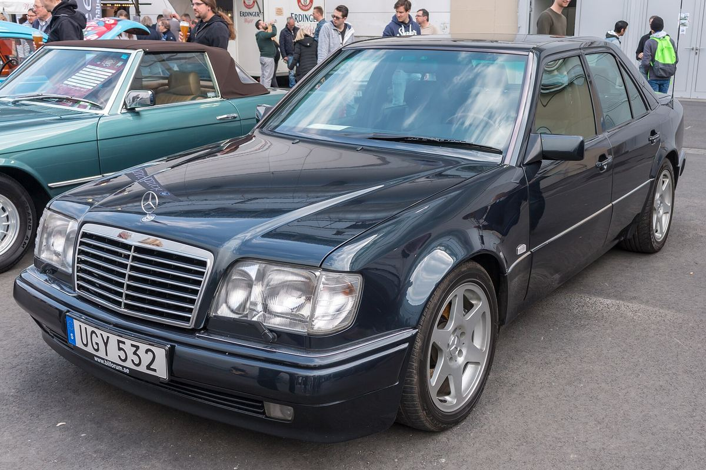

Cómo importarun coche

Importar un coche a España tiene seis pasos: elegirlo, comprarlo, traerlo, pasar la aduana si viene de fuera de la UE, homologarlo y matricularlo. Lo que pagas depende sobre todo del país de origen y de las emisiones del coche. Aquí lo tienes explicado, país por país.
Actualizado en . Información orientativa: el cálculo exacto para tu coche te lo damos por escrito en el estudio gratuito.
Pedir estudio gratisElige el país
Cada origen tiene sus impuestos y sus papeles. Pulsa en uno para ver su guía.

EE. UU.
Muscle cars y clásicos americanos. Arancel del 10 %, o 0 % si el coche se fabricó allí y se acredita.
Cómo importar de EE. UU.
Japón
JDM de los 90 y coches de drift. Sin arancel si el coche se fabricó en Japón y se acredita el origen.
Cómo importar de JapónDubái
SUV y deportivos de lujo. Arancel del 10 % e IVA del 21 % por regla general.
Cómo importar de Dubái
Alemania
Clásicos y deportivos alemanes. Sin aduana ni arancel: es una compra dentro de la UE.
Cómo importar de Alemania
Paso a paso
Lo que hay que hacer, en este orden. Nosotros nos ocupamos de todo.
Elegir y revisar el coche
Antes de pagar, alguien tiene que verlo en persona: chasis, mecánica, kilómetros e historial. También hay que comprobar que ese modelo se puede matricular en España.
Comprarlo con garantías
Contrato, factura y el título de propiedad del país de origen, sin cargas. El pago, a través de una cuenta escrow o una garantía equivalente.
Traerlo a España
Desde fuera de Europa, en barco y con seguro. Desde Alemania, en camión portacoches o conduciendo con matrícula de exportación.
Pasar la aduana
Solo si viene de fuera de la UE. Se presenta el DUA y se pagan el IVA de importación y, si toca, el arancel.
Homologar y pasar la ITV
Con certificado europeo de conformidad (COC) basta la ficha técnica reducida. Sin él, hace falta homologación individual. Después, la ITV en España.
Matricular
Se paga el impuesto de matriculación (modelo 576) y la tasa de Tráfico, y la DGT asigna la matrícula española.
Qué se paga
Lo que cambia según de dónde venga el coche. El valor en aduana es el precio más el transporte y el seguro.
| Alemania | EE. UU. | Japón | Dubái | |
|---|---|---|---|---|
| Aduana | No | Sí | Sí | Sí |
| Arancel | No | 10 %, o 0 % si el coche se fabricó en EE. UU. y se acredita el origen | 10 %, o 0 % si el coche se fabricó en Japón y se acredita el origen | 10 % por regla general |
| IVA | Incluido en el precio si es usado y lo vende un profesional; 21 % en España si es nuevo | 21 % de importación | 21 % de importación | 21 % de importación |
| Homologación | Ficha técnica reducida con el COC | Individual | Individual | Individual, o ficha reducida si tiene COC |
| Impuesto de matriculación | Según CO₂ | Según CO₂ | Según CO₂ | Según CO₂ |
Impuesto de matriculación
Se paga en España al matricular el coche, venga de donde venga. El tipo depende de las emisiones de CO₂ y, en un coche usado, se aplica sobre su valor según las tablas de Hacienda.
Tipos de la península y Baleares. En Canarias son más bajos.
| Emisiones de CO₂ | Tipo |
|---|---|
| Menos de 120 g/km | 0 % |
| De 120 a menos de 160 g/km | 4,75 % |
| De 160 a menos de 200 g/km | 9,75 % |
| 200 g/km o más | 14,75 % |
Coches clásicos y vehículos históricos
Un coche con 30 años o más desde que se fabricó o se matriculó por primera vez, cuyo modelo ya no se fabrica y que conserva su estado original, puede matricularse en España como vehículo histórico (Real Decreto 892/2024). Un coche importado sigue el procedimiento ordinario, con el informe de un servicio técnico de vehículos históricos.
Después pasa la ITV con menos frecuencia: cada 2 años entre los 30 y los 40 años, cada 3 entre los 40 y los 45, cada 4 entre los 45 y los 60, y a partir de los 60 queda exento.
En la aduana
Algunos clásicos en estado original pueden declararse como objeto de colección (partida arancelaria 9705), sin arancel y con un IVA de importación del 10 %. Aduanas lo decide coche a coche y no basta con la edad, así que lo presupuestamos con los impuestos normales salvo que esté confirmado.
Preguntas frecuentes
Pulsa en una pregunta para ver la respuesta.
¿Cuánto cuesta importar un coche a España?
Hay que sumar el precio del coche, el transporte con seguro, el IVA y el arancel si viene de fuera de la UE, la homologación y la ITV, el impuesto de matriculación y la gestión. En el estudio gratuito te damos el total desglosado y por escrito antes de que decidas.
¿Qué es el COC?
El certificado europeo de conformidad: el documento del fabricante que dice que el coche cumple la homologación europea. Con él basta la ficha técnica reducida y la ITV. Los coches fabricados para EE. UU., Japón o los países del Golfo normalmente no lo tienen y necesitan homologación individual.
¿Qué es el DUA?
El Documento Único Administrativo: la declaración de aduanas con la que se pagan el IVA y el arancel de importación y se libera el coche. Sin él no se puede matricular un coche que llega de fuera de la UE. Lo presentamos nosotros.
¿Puede importar un coche un particular?
Sí, cualquier persona puede importar un coche para uso propio. Nosotros nos ocupamos de la búsqueda, la revisión, la compra segura, el transporte y todos los trámites, para que tú no tengas que hacer ninguno.
¿Se puede matricular como histórico un coche importado?
Sí, si tiene 30 años o más desde que se fabricó o se matriculó por primera vez, su modelo ya no se fabrica y conserva su estado original, sin cambios de fondo en motor, frenos, dirección, suspensión o carrocería. Un coche importado sigue el procedimiento ordinario del Real Decreto 892/2024, con el informe de un servicio técnico de vehículos históricos.
¿Calculamos el tuyo?
Dinos qué coche buscas y de dónde. Te mandamos el coste total por escrito, gratis, en menos de 24 horas.